|
|
HELP FIND THE FOLLOWING FRENCH LOCATIONS
PAGE 69
 There was some filming near the town of
There was some filming near the town of
THE NEW
AVENGERS: K is for Kill Part 1 - The Tiger Awakes
Blaincourt lès Précy - Identified by Geoff Socket, April 2015
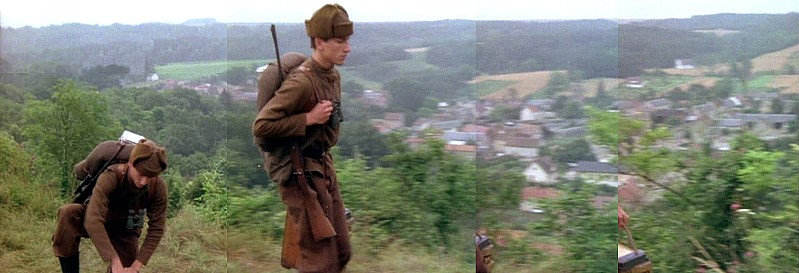
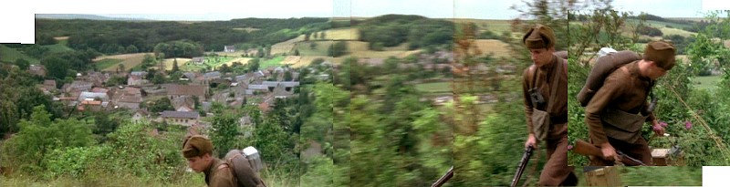
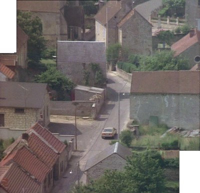 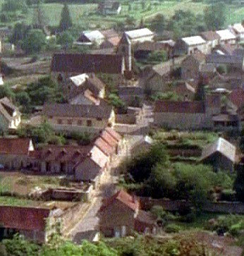 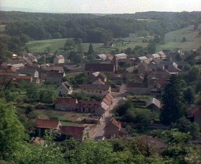
Blaincourt lès Précy, rue des Sablons - Identified by Geoff Socket, April 2015
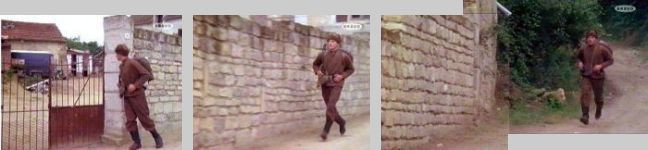
Blaincourt lès Précy, rue de la Mairie - Identified by Geoff Socket, April 2015
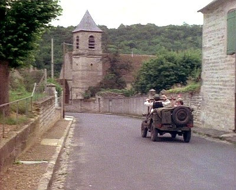 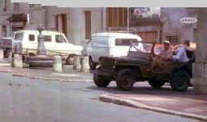 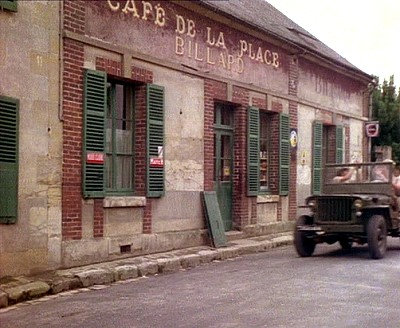
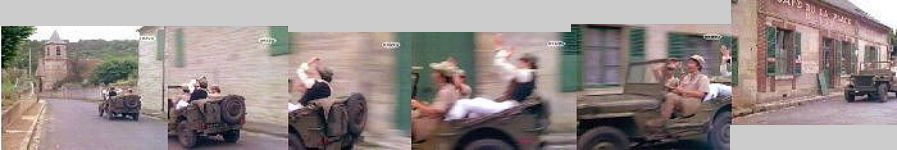
Baillet en France - Identified by Geoff Socket, April 2015


Rue du Vieux Château, La Chapelle-en-Serval, Oise, France - Identified by Daniel Bauer, June 2019.
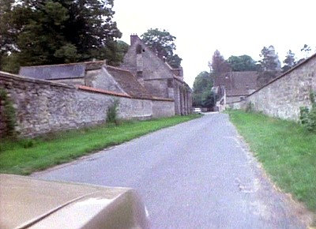
Le Château des Bouleaux, Route de Précy, Gouvieux, Oise, France - Identified by Daniel Bauer, June 2019
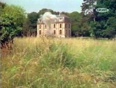 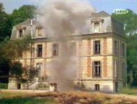 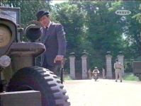
THE NEW
AVENGERS: K is for Kill Part 2 - Tiger by the Tail
Gencel, Boutet and Caudroy (redeveloped), Pirogues de Bercy St, Paris, Île-de-France - the warehouse where Turkov awakes and is
nearly caught by Purdey and Gambit- Identified by Geoff Socket, April 2015
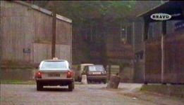
Notre Dame de l'Assomption, Taverny, France The is the church and cemetery where General Gaspard's funeral takes place. - Identified by Geoff Socket, April 2015
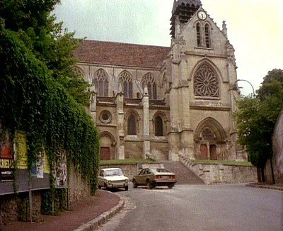 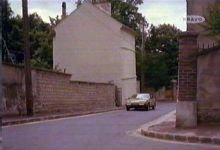 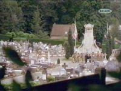
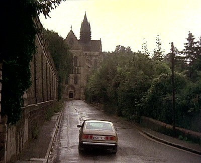 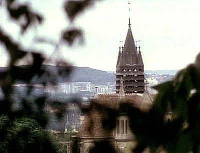
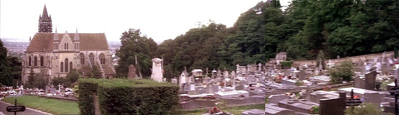
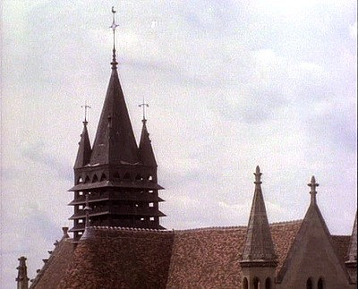
rue de Montubois, Béthemont-la-Forêt, Île-de-France, France Steed races back to the church when Gambit calls on his radio. Steed drives by this village - Identified by Geoff Socket, April 2015
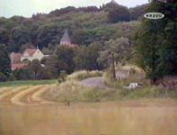
Unknown 1 - Around this bend...
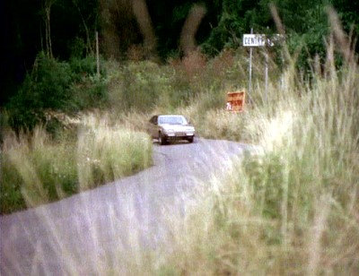
rue Béthemont, Taverny, Île-de-France -...and makes a U-turn in this gateway - Identified by Geoff Socket, April 2015

D44, Chauvry, Île-de-France - We then see Steed race down a short road to this junction - Identified by Geoff Socket, April 201
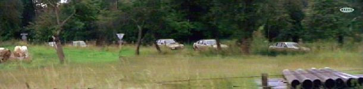
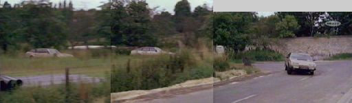
Think you know a spot? Need a bigger image? Email me.
< Previous | Index | Avengerland | Next >
Copyright © 2003 Anthony R. McKay